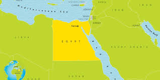
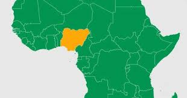
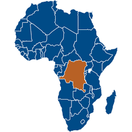

Fővárosa:Cairo
Területe: 1 002 000 km²
Népesség:112,7 millió
Legfontosabb része:Nílus Delta,azért mert Itt vannak a legnagyobb városok
Az ország azon belül is a Nílus 2 részre van osztva A dél Nílus az érdekes módon az északi része Egyiptomnak ott vannak a nagyobb városok és a populáció nagy része Ott él az Észak Nílus az ország déli része ott is sokan élnek de nem túl sokan
Fővárosa:Abuja
Területe:923 768 km²
Népesség: 223,8 millió
Legfontosabb része:Partszakasz,Ott van Lagos az ország legnagyobb városa és itt van a legművelhetőbb terület az országnak mert Északon inkább mocsarasabb a terület
Az ország a világ 6. legnagyobb népességével rendelkező ország,250 különböző népcsoport van az országban ami a múltban sok civil háborúhoz vezetett
Fővárosha:Kinshasa
Területe:2,34millió km²
Népesség:102,3millió
Legfontosabb része:Főváros,Keleti országrész.Azért mert a fővárosban van minden,a Keleti országrészben meg található autógumi ami az exportjuknak a nagy része
Az Ország Afrika 2.legnagyobb Országa Szudán után ,de csak egy kis része megművelhető az országnak,mert az ország 75% a esőerdő vagy dzsungel,nagyon rossz a megélhetés mert volt egy civil háboró 1990 körül ami az egész országot egy anarchia állapotba tette,nekik volt a leggyorsabban lezajlódó háborújúk a msáik Congo ellen ami fél óráig tartott mert a 2 ország fővárosa csak 8 kmre van egymástól
Fővárosa(érdekesen három van):Fokváros, Pretoria, Bloemfontein
Területe:1,22millió km²
Népesség:60,41 millió
Legfontosabb része:Bloemfontein,Johannesburg környék.Azért mert Bloemfontein az ország pénzügyi fővárosa és ott van az országnak a legjobb infrastruktúrája
Az Ország az eggyetlen a világon ahol 3 különböző főváros van,Nagyon érdekes a kialakítása ez emiatt van mert mindenhol van elszórva egy nagyváros az országon belül talán az észak nyugati részén nincs egy nagyváros se